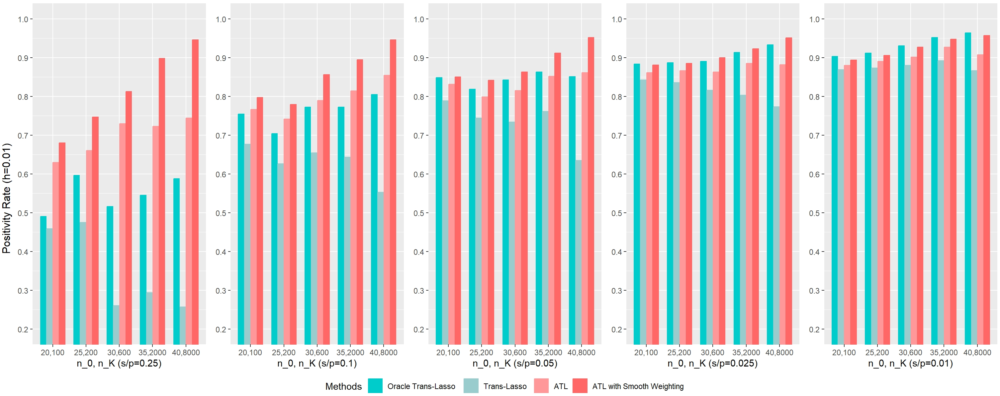
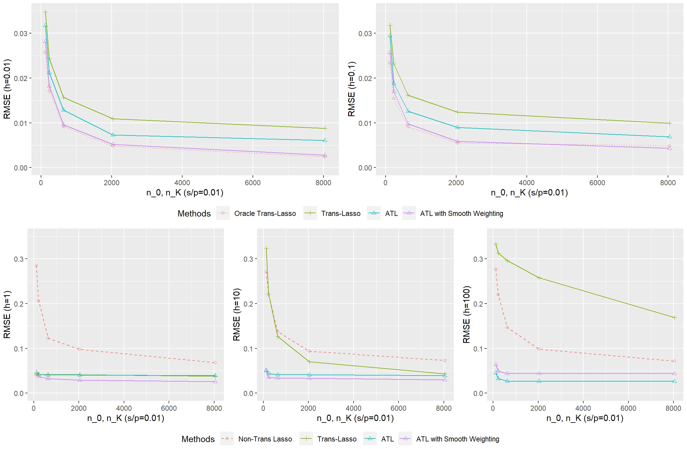
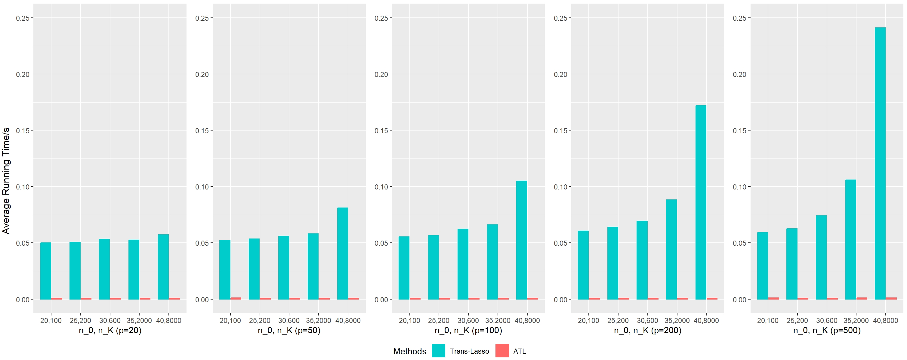

Automatic Transfer Learning for High-Dimensional Linear Regression
Author
Xinhao Qu, Peiling Lin, Luhan Tang, Ying Lin
Part 1
Background
The Least Absolute Shrinkage and Selection Operator (LASSO), proposed by Tibshirani (1996), is a regression method designed to improve prediction accuracy and interpretability of statistical models.
In traditional Ordinary Least Squares (OLS) regression, the model often has low bias but suffers from high variance, especially with a large number of predictors. This can result in overfitting and decreased generalization performance. LASSO addresses these issues by applying a constraint on the sum of the absolute values of the regression coefficients, encouraging sparsity in the model.
Recall: Least Squares Regression
First and foremost, I want to bring you back to the Least Squares Regression. It is the basis of LASSO Regression.
Suppose we are given \(n\) observations of the form \((x_i, y_i)\), \(i = 1, \dots, n\), where each \(x_i \in \mathbb{R}^d\) denotes a feature vector and \(y_i \in \mathbb{R}\) an associated response value. Let \(X \in \mathbb{R}^{n \times d}\) denote the predictor matrix (whose \(i^{th}\) row is \(x_i\)) and \(Y \in \mathbb{R}^n\) denote the response vector. Recall that the least squares regression coefficients of \(Y\) on \(X\) are given by solving \(\min_{\beta} \|Y - X\beta\|_2^2\). When \(d \leq n\) and \(\text{rank}(X) = d\), this produces the unique solution \(\hat{\beta} = (X^\top X)^{-1} X^\top Y\). The fitted values (i.e., in-sample predictions) are \(X\hat{\beta} = X(X^\top X)^{-1} X^\top Y = P_X Y\), where \(P_X = X(X^\top X)^{-1} X^\top\) denotes the projection onto the column space of \(X\).
\[
\min_{\beta} \|Y - X\beta\|_2^2.
\]
Principle
When \(d \leq n\) and \(\text{rank}(X) = d\), this produces the unique solution:
\[
\hat{\beta} = (X^\top X)^{-1} X^\top Y.
\]
The fitted values (i.e., in-sample predictions) are:
\[
X\hat{\beta} = X(X^\top X)^{-1} X^\top Y = P_X Y,
\] where \(P_X = X(X^\top X)^{-1} X^\top\) denotes the projection onto the column space of \(X\).
Trouble in OLS when in High Dimensions
As we just saw, the risk of least squares regression degrades as \(d\) grows close to \(n\), the out-of-sample risk actually diverges at \(d = n\).
Meanwhile, the least squares estimator itself is not even well-defined when \(d > n\), in that the optimization problem \(\min_{\beta} \|Y - X\beta\|_2^2.\) does not have a unique solution. In this case, any vector of the form \[
\hat{\beta} = (X^\top X)^+ X^\top Y + \eta, \quad \text{where } \eta \in \text{null}(X),
\]
solves it, where we write \(A^+\) to denote the generalized inverse of a matrix \(A\), and \(\text{null}(A)\) to denote its null space.
If all we care about is out-of-sample prediction, then this is not the end of the story for least squares—it turns out that taking \(\eta = 0\) in (5), which yields the minimum \(\ell_2\) norm least squares solution, can still have interesting predictive properties when \(d > n\).
LASSO
Regularization
Regularization in Least Squares Setting
At a high level, it allows for the production of nontrivial coefficient estimates and can often yield better predictions. The effectiveness of regularization depends strongly on the specific characteristics of the prediction problem.
In the context of least squares regression, traditional approaches to regularization are expressed in two forms:
Constrained form:
Minimize \(\| Y - X \beta \|_2^2\) subject to \(\beta \in C\).
Penalized form:
Minimize \(\| Y - X \beta \|_2^2 + h(\beta)\).
Here:
\(C\) represents a (typically convex) set.
\(h\) is a (typically convex) penalty function.
For instance, \(C = \{ \beta : \| \beta \| \leq t \}\) is the sublevel set of a norm \(\|\cdot\|\), and \(h(\beta) = \lambda \|\beta\|\) is a nonnegative multiple of the norm.
The constrained and penalized forms are equivalent under convex duality. Specifically, for any \(t \geq 0\), there exists a value \(\lambda \geq 0\) such that the solution \(\hat{\beta}\) to the constrained problem also solves the penalized problem, and vice versa.
The LASSO (Least Absolute Shrinkage and Selection Operator) regression minimizes the following objective function: \[
\min_{\beta} \left\{ \frac{1}{2n} \sum_{i=1}^n \left( y_i - \beta_0 - \sum_{j=1}^p x_{ij} \beta_j \right)^2 + \lambda \sum_{j=1}^p |\beta_j| \right\}
\] Where:
\(y_i\): Response variable for the \(i\)-th observation.
\(x_{ij}\): Predictor variable for the \(i\)-th observation and \(j\)-th feature.
\(\beta_j\): Coefficients to be estimated for the \(j\)-th predictor.
\(\lambda\): Regularization parameter controlling the amount of shrinkage.
\(n\): Number of observations.
\(p\): Number of predictors.
Residual Sum of Squares (RSS): The first term measures the goodness of fit of the model to the data.
L1 Regularization Term: The second term penalizes the absolute values of the coefficients, encouraging sparsity.
Tuning Parameter (\(\lambda\)): Controls the trade-off between model complexity and goodness of fit.
As \(\lambda\) increases, more coefficients are shrunk to zero, effectively performing feature selection.
By penalizing the absolute size of the coefficients, LASSO tends to set some coefficients to exactly zero, effectively selecting a simpler subset of predictors.
2. Objective of LASSO Regression
The objective of LASSO regression is to determine the coefficients that minimize the following objective function:
Objective Function = \(RSS + L_1\)
3. Shrinking Coefficients in LASSO Regression
LASSO regression incorporates the L1 regularization term, which shrinks the coefficients towards zero. When the tuning parameter \(\lambda\) is sufficiently large, some coefficients are driven exactly to zero.
4. Tuning Parameter
The regularization parameter \(\lambda\) plays a crucial role in LASSO regression:
A larger \(\lambda\) increases the amount of regularization, pushing more coefficients towards zero.
A small \(\lambda\) reduces the regularization effect, allowing more variables to retain non-zero coefficients.
Example in R
# Load the necessary libraries#install.packages("rms")#install.packages("glmnet")#install.packages("caret")library(rms)
Loading required package: Hmisc
Attaching package: 'Hmisc'
The following objects are masked from 'package:base':
format.pval, units
library(glmnet) # For lasso regression
Loading required package: Matrix
Loaded glmnet 4.1-8
library(caret) # For additional model utilities
Loading required package: ggplot2
Loading required package: lattice
# Load the dataset and handle missing valuesdata <- survival::lung # Load the dataset directly from the survival packagedata <-na.omit(data) # Remove rows with missing values# If a variable has 3 categories, create dummy variables# Assuming a categorical variable `X` has levels A, B, C# Convert it to two dummy variables# data$X_B <- ifelse(data$X == "B", 1, 0)# data$X_C <- ifelse(data$X == "C", 1, 0)# Convert data to a matrix format for glmnet# Predictors are columns 4 to 10X <-as.matrix(data[, 4:10])# Response variable is column 3Y <-as.matrix(data[, 3])# Fit a lasso regression model# alpha = 1 indicates lasso regression; alpha = 0 would indicate ridge regressionlasso <-glmnet(X, Y, alpha =1, family ="binomial", nlambda =100)# If alpha = 0, glmnet performs ridge regression.# `nlambda = 100` ensures 100 iterations to find the optimal lambda.print(lasso)
# Plot the coefficients against the log(lambda)plot(lasso, xvar ="lambda", label =TRUE)title(main ="LASSO Path: Coefficients vs Log(Lambda)", xlab ="Log(Lambda)", ylab ="Coefficients")
# Cross-validation for optimal lambdaset.seed(42) # For reproducibilitycv_lasso <-cv.glmnet(X, Y, alpha =1, family ="binomial", nfolds =10)# Plot cross-validation resultsplot(cv_lasso)title(main ="Cross-Validation for LASSO", xlab ="Log(Lambda)", ylab ="Cross-Validation Error")
# Coefficients at optimal lambdalasso_coef <-coef(cv_lasso, s ="lambda.min")print(lasso_coef)
8 x 1 sparse Matrix of class "dgCMatrix"
s1
(Intercept) 1.390341873
age 0.003420687
sex -0.629636686
ph.ecog 0.472342775
ph.karno .
pat.karno -0.002485985
meal.cal .
wt.loss .
Part 2
Lasso Regression in R
In this example, we will use the Boston Housing dataset, a widely recognized dataset for regression analysis. It contains various features that may impact the median value of homes in Boston neighborhoods.
Dataset Features
crim: Per capita crime rate by town.
zn: Proportion of residential land zoned for lots larger than 25,000 sq. ft.
indus: Proportion of non-retail business acres per town.
chas: Charles River dummy variable (1 if the tract borders the river; 0 otherwise).
nox: Nitrogen oxide concentration (parts per 10 million).
rm: Average number of rooms per dwelling.
age: Proportion of owner-occupied units built before 1940.
dis: Weighted distances to five Boston employment centers.
rad: Index of accessibility to radial highways.
tax: Full-value property tax rate per $10,000.
ptratio: Pupil-teacher ratio by town.
b: Computed as 1000(Bk - 0.63)^2, where Bk is the proportion of the Black population by town.
lstat: Percentage of the population with lower socioeconomic status.
medv: Median value of owner-occupied homes (in $1000s), used as the target variable.
This dataset provides a comprehensive basis for demonstrating Lasso Regression and exploring the relationships between the predictors and the target variable.
Code Implementation
# Load necessary librarieslibrary(glmnet)library(caret)library(MASS)# Load the Boston Housing datasetdata(Boston)head(Boston)
# Data preprocessingX <-as.matrix(Boston[, -14]) # FeaturesY <- Boston$medv # Target variable# Splitting data into training and test setsset.seed(123)train_index <-createDataPartition(Y, p =0.8, list =FALSE)train_data <- X[train_index, ]test_data <- X[-train_index, ]train_label <- Y[train_index]test_label <- Y[-train_index]# Building Lasso Regression modellasso_model <-glmnet(train_data, train_label, alpha =1)# Predicting on test setpredictions <-predict(lasso_model, newx = test_data, s =0.01)# Evaluating the model (using Root Mean Squared Error)rmse <-sqrt(mean((predictions - test_label)^2))# Printing the resultscat("Lasso Regression RMSE:", rmse, "\n")
Lasso Regression RMSE: 4.586974
# Plotting coefficientsplot(lasso_model, xvar ="lambda", main ="Lasso Coefficients Plot")
Code Explanation
1. Loading Libraries
glmnet: Provides functions to perform Lasso and Ridge Regression.
caret: Useful for data partitioning and general machine learning tasks.
2. Loading the Dataset
data(Boston): Loads the Boston Housing dataset.
head(Boston): Displays the first few rows of the dataset to understand its structure.
3. Data Preprocessing
X <- as.matrix(Boston[, -14]):
Extracts all columns except the 14th (medv) as features.
Converts the features into a matrix format required by glmnet.
Y <- Boston$medv:
Extracts the 14th column (medv) as the target variable, which represents the median value of homes.
4. Splitting the Dataset
set.seed(123): Sets a random seed to ensure reproducibility.
createDataPartition(Y, p = 0.8, list = FALSE):
Splits the dataset into training (80%) and testing (20%) subsets while maintaining class distribution.
train_data, test_data:
Hold the feature data for training and testing.
train_label, test_label:
Contain the corresponding target labels for training and testing.
5. Building the Lasso Regression Model
glmnet(train_data, train_label, alpha = 1):
Fits a Lasso Regression model to the training data.
alpha = 1 specifies that this is Lasso Regression (as opposed to Ridge Regression when alpha = 0).
Lasso applies regularization, shrinking some coefficients to zero, effectively performing feature selection.
6. Prediction
predict(lasso_model, newx = test_data, s = 0.01):
Predicts the target variable for the test dataset.
The s parameter controls the shrinkage penalty; smaller values of s correspond to less regularization.
7. Evaluating the Model
rmse <- sqrt(mean((predictions - test_label)^2)):
Computes the Root Mean Squared Error (RMSE), which measures the model’s performance.
A lower RMSE indicates better model performance.
8. Printing Results
cat("Lasso Regression RMSE:", rmse, "\n"):
Outputs the computed RMSE value to the console.
9. Plotting Coefficients
plot(lasso_model, xvar = "lambda", main = "Lasso Coefficients Plot"):
Visualizes how the regression coefficients change as a function of the regularization parameter (lambda).
This plot provides insight into which features are being selected or shrunk to zero by Lasso regularization.
Conclusion
LASSO regression stands out as a vital tool in statistical modeling and machine learning, offering a balance between simplicity and accuracy.
By promoting sparsity through effective feature selection, LASSO regression helps identify key variables and mitigate overfitting, especially in high-dimensional datasets.
Part 3
Transfer Learning
Given a target problem, transfer learning (Torrey and Shavlik, 2010) aims at transferring the knowledge from different but related samples to improve the learning performance of the target problem.
Transfer Learning in High-dimensional Linear Regression
If a sample/study is similar or related to the target problem, we say that, this auxiliary sample/study is informative. A key difficulty in applying transfer learning to high-dimensional linear regression is that informative samples/studies are not always known, which makes transfer learning more challenging to implement.
Literature review : S. Li, T. T. Cai, H. Li (2022)
Motivated by the Genotype-Tissue Expression (GTEx) data, which are high-dimensional with relatively small sample sizes, S. Li, T. T. Cai, and H. Li (2022) proposed ‘Trans-Lasso,’ a data-driven procedure designed to address the challenge of identifying informative samples/studies.
In the simulation, the authors compared five methods (Trans-Lasso, Oracle Trans−Lasso, Lasso, Aggregated Lasso, Ad hoc 1-transfer). Oracle Trans−Lasso assumes that auxiliary studies are known. Lasso is also called non-Trans-Lasso. Aggregated Lasso is similar to Trans-Lasso but excludes the bias-correction step. Similarly, Ad hoc 1-transfer is based on Trans-Lasso but replaces the Q-aggregation step with cross-validation. Among the adaptive transfer learning methods (Trans-Lasso, Lasso, Aggregated Lasso, Ad hoc 1-transfer), Trans-Lasso achieves the smallest prediction errors in almost all experiments.
The proposed method has several benefits, including information integration that improves data use and learning accuracy. It also has faster coverage compared to Lasso in some situations, and is useful for sparse data tasks, such as identifying important genes from a large set of candidates. However, it has some drawbacks, including the risk of negative transfer, where prior knowledge hinders learning in new tasks due to task dissimilarity. Additionally, the method has strict sparsity and task similarity restrictions and requires heavy computational resources.
Automatic Transfer Learning for High-Dimensional Linear Regression
Based on Trans-Lasso (S. Li, T. T. Cai, and H. Li, 2022), we propose an extension to the adaptive design, called Automatic Transfer Lasso (ATL), which involves allocating weights to each parameter dimension-wise. ATL customizes the method by assigning different importance to each parameter, potentially improving the model’s performance by more effectively capturing the specific contributions of each dimension.
In the simulation part, we conduct numerical experiments to compare ATL, Oracle Trans-Lasso, Trans-Lasso, and non-Trans-Lasso. We evaluate these methods in three aspects: positivity for knowledge transfer, consistency and double robustness, and computational efficiency.
Data generating process
Assume single target data set and limited number of large sources. Each row of the data matrix is independent and identically formulated through high-dimensional linear functions: \[
y_i^{(k)}={x_i^{(k)}}^{\top} \beta^{(k)}+\epsilon_i^{(k)}, \quad i\in1, \ldots, n_k.
\] Let \(K=1\) for simplicity and \(k\in\{0,1\}\) indicates the target and source data. Consider \(n_0\ll n_1\), \(\beta^{(k)}\in\mathbb{R}^{p}\) with \(p\gg n_1\). \(\epsilon_i^{(k)}\)’s are the random noise. The parameter space is specified as \[
\Theta_q(s, h)=\left\{\left(\beta^{(0)}, \delta \right):\|\beta^{(0)}\|_0 \leq s, \left\|\delta\right\|_q \leq h\right\},
\] where \(\delta\equiv\beta^{(0)}-\beta^{(1)}\). \(\left\|\delta\right\|_q\) measures task dissimilarity between the target and the source, which is controlled by \(h\geq0\). \(q\in\{0,1\}\) with \(\left\|\delta\right\|_0\) depicts the sparsity degree and \(\left\|\delta\right\|_1\) describes the cumulative absolute difference between parameters. Integer \(s\geq0\) confines the sparsity level of target parameters.
Part 4
ATL algorithm
Input: Target data \(\{y_i^{(0)}, x_i^{(0)}\}_{i\in1,\ldots,n_0}\) and auxiliary samples \(\{y_i^{(1)}, x_i^{(1)}\}_{i\in1,\ldots,n_1}\); tuning \(\lambda_{n_1}, \lambda_{n_0}\).
Specify \(w_j=1/|\tilde{\delta_j}|^{\gamma}\), where \(\tilde{\delta}\) is a zero-consistent initial estimator, which is obtained through SCAD oracle estimation, and \(\gamma>0\) captures the sensitivity for small variations.
By restricts \(h\), we formulate an ideal case for knowledge transfer. Sample sizes \((n_0,n_1) \in \{(20,100),(25,200),(30,600),(35,2000),(40,8000)\}\). Calibrate target and source with the same sparsity structure of degree \(s/p\in\{0.01,0.025,0.05,0.1,0.25\}\), where \(p\in\{20,50,100,200,500\}\), combined with \(h=0.01\) under \(\|\delta\|_0=1\) in the specified parameter space. For tuning, set \(\gamma_0=0.05,\gamma_1=0.5\) and \(\lambda\)’s are chosen through cross-validation.
Let \(w_j= 1/\kappa+I\{j\in \mathcal{A}\}\), with a shrinking factor of \(1/\kappa\) in upper bound, the follwing figure compares ATL with Oracle Trans-Lasso and Trans-Lasso on Root Mean Square Error (RMSE) ratio over non-transferred Lasso estimation under 100 simulations, illustrating effective knowledge transfer by all non-negative rates, different levels of sparsity dependence with Oracle Trans-Lasso and Trans-Lasso being the sensitive ones.
Let \(w_j=1/|\tilde{\delta_j}|^{\gamma}\), ATL with smooth weighting is also contained. By typically comparing with ATL that has known weights, smooth weighting achieves parallelled performance in practice.

Positive Rate for Oracle Trans-Lasso, Trans-Lasso, ATL and ATL with Smooth Weighting under \(h=0.01\) and Various Sparsity Level
Consistency and double robustness
Relaxing \(\|\delta\|_1\leq h\in\{0.01,0.1,1,10,100\}\) with \(\|\delta\|_0=1\) still, we calibrate \(w_j\) in ATL, which obtains almost idential rate with Oracle Trans-Lasso according to the first row of the following figure, demonstrating its nearly optimal limiting performance for small \(h\). From the second row in the following figure, Oracle Trans-Lasso and Trans-Lasso, show a clear shift from below to exceed the red dashed boundary of Non-Trans Lasso when \(h\) increases, behaving again sensitive for negative sources. ATL with smooth weighting again shows its comparable performance with ATL under known weights.

Estimation Error for Non-Trans Lasso, Oracle Trans-Lasso, Trans-Lasso, ATL and ATL with Smooth Weighting under Fixed \(s/p=0.01\) but Different Dissimilarity Level
Computational efficiency
Through embedding transferability within the learning process, ATL shrinks the computation burden compared with Trans-Lasso and appears insensitive for enlarging \(n_0,n_K\) and \(p\).

Computation Time for Trans-Lasso and ATL under Various Dimensions
Reference Material
Tibshirani, R. (1996). Regression Shrinkage and Selection via the Lasso. Journal of the Royal Statistical Society: Series B (Methodological), 58(1), 267–288. link
Li, S., Cai, T. T., & Li, H. (2022). Transfer Learning for High-Dimensional Linear Regression: Prediction, Estimation and Minimax Optimality. Journal of the Royal Statistical Society Series B: Statistical Methodology, 84(1), 149–173. link
For further exploration, the following references provide comprehensive insights into the theory and applications of LASSO regression: